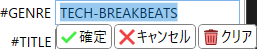

ヘッダー
BMSファイルの基本情報を記述するヘッダーを表示するエリアです。
説明
要素をクリックすると説明が表示されます。- 3つのタブで構成されますが、表示領域の高さが足りない場合、「基本」タブが「基本」と「プレイ」に分裂します。
-
各ヘッダーの値部分をクリックすると編集モードになります。
- 確定: 編集を確定します。
- キャンセル: 編集を破棄します。アンドゥ履歴は増えません。
-
 クリア: テキストボックスを空にします。
クリア: テキストボックスを空にします。
- デフォルト値のあるヘッダーや、降下中に親で定義されているヘッダーは、その値が薄く表示されます。
- 数値を指定するヘッダー(#BPMなど)は、値の上でマウスホイールを回すことで、その値を1ずつ変更できます。
- コンボボックスで指定するヘッダー(#RANKなど)は、コンボボックスの上でマウスホイールを回すことでも変更できます。
#TOTAL自動入力の数式の詳細
- 文字列や記号列はスペースで区切ります。
-
式には以下の文字列や記号列が使用可能です。
-
変数記号
-
以下の文字は計算時に、それぞれ右側で示された値に置き換わります。
- 大文字と小文字は区別されます。
- n: 演奏レーンにある通常ノートの総数
-
以下の文字は計算時に、それぞれ右側で示された値に置き換わります。
-
変数記号